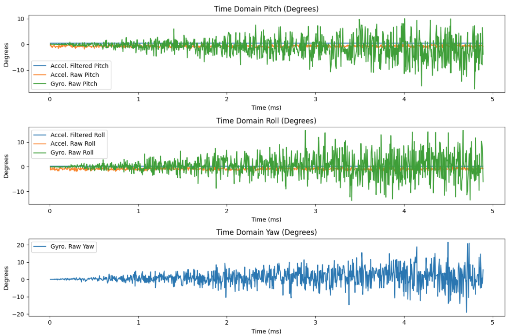

Lab 2: IMU Setup + Motion Data
This lab focuses on setting up the IMU, validating accelerometer and gyroscope readings, and collecting/sending sample data.
1. Lab Tasks
Set up the IMU

IMU Connection Wiring
Blinking LED Test

IMU Working Output
AD0_VAL Explanation
AD0_VAL = 1 refers to the jumper on the back of the IMU. This pin sets the I2C address of the IMU. By connecting it to GND or VCC, you can select between two addresses (0x68 or 0x69). This allows you to use two IMUs on the same I2C bus if needed. The value should be 1 because the jumper is connected to VCC, giving an address of 0x69.
2. Accelerometer
Output at {-90, 0, 90} degrees (Pitch + Roll)
I recorded accelerometer data at three known orientations at -90, 0, and 90 degrees for both pitch and roll. Then I compared the results to the expected pitch/roll values by finding the conversion factor. I took that value and multiplied it to the recorded accelerometer data to obtain proper values for pitch and roll.
Accelerometer Code
case GET_ACC: {
unsigned long starttime = millis();
for (int i = 0; i < arraylength;) {
if (myICM.dataReady()) {
myICM.getAGMT();
}
// Conversion factors
const float pitch_full_range = 180.0 / (86.0 + 88.4);
const float roll_full_range = 180.0 / (89.0 + 87.4);
float accelerometer_pitch = atan2(myICM.accY(), myICM.accZ()) * 180.0 / M_PI * pitch_full_range;
float accelerometer_roll = atan2(myICM.accX(), myICM.accZ()) * 180.0 / M_PI * roll_full_range;
time_list[i] = (float)(millis() - starttime);
Acc_pitch_list[i] = accelerometer_pitch;
Acc_roll_list[i] = accelerometer_roll;
i++;
}
// Send data over Bluetooth
for (int i = 0; i < arraylength;) {
tx_estring_value.clear();
tx_estring_value.append(time_list[i]);
tx_estring_value.append("|");
tx_estring_value.append(Acc_pitch_list[i]);
tx_estring_value.append("|");
tx_estring_value.append(Acc_roll_list[i]);
tx_characteristic_string.writeValue(tx_estring_value.c_str());
i++;
}
break;
}Pitch vs Time

Roll vs Time

Accelerometer Accuracy Discussion
My accelerometer readings were initially imprecise. The main problem was that the total angle range from -90 to 90 degrees was actually less than 180 degrees. To combat this, I took the desired range of 180 and divided it by the accelerometer readings at the real -90 and +90 degrees. This gave me a scaling factor where I could obtain the proper range by multiplying this by the raw accelerometer angle.
Fourier Transform Analysis
Raw Pitch and Roll: Induced Noise

Fourier Transform Analysis

The raw pitch and roll plots show noisy behavior with induced noise. The Fourier transform plots of the sampled data from 0 to 0.214 seconds reveal the frequency components of this noise.
Low Pass Filter Analysis
Filtered Data

Sampling Frequency Calculation

Alpha Calculation
RC = 1/(2π × fc) = 1/(2π × 5) = 0.0318 α = ts/(ts + RC) = 0.214/(0.214 + 0.0318) = 0.871
To implement the Low Pass Filter for the accelerometer, I first calculated the sampling rate by finding the mean difference between time points, resulting in 1163 Hz. The LPF does an excellent job at smoothing the data and eliminating random spikes.
3. Gyroscope
Pitch, Roll, and Yaw Documentation
I tested multiple IMU positions and documented how pitch, roll, and yaw changed based on the board orientation.
Gyroscope Code
case GET_GYRO: {
const unsigned long starttime = millis();
for (int i = 0; i < arraylength;) {
if (myICM.dataReady()) {
myICM.getAGMT();
}
// Accelerometer calculations
const float pitch_full_range = 180.0 / (86.0 + 88.4);
const float roll_full_range = 180.0 / (89.0 + 87.4);
float accelerometer_pitch = atan2(myICM.accY(), myICM.accZ()) * 180.0 / M_PI * pitch_full_range;
accelerometer_roll = atan2(myICM.accX(), myICM.accZ()) * 180.0 / M_PI * roll_full_range;
// Gyroscope calculations
float dt = (float(millis()) - starttime) / 1000.0;
float gx = myICM.gyrX();
float gy = myICM.gyrY();
float gz = myICM.gyrZ();
// Store data
time_list[i] = (float)(millis() - starttime);
Acc_pitch_list[i] = accelerometer_pitch;
Acc_roll_list[i] = accelerometer_roll;
if (i == 0) {
Gyro_pitch_list[i] = 0;
Gyro_roll_list[i] = 0;
Gyro_yaw_list[i] = 0;
} else {
Gyro_pitch_list[i] += gx * dt;
Gyro_roll_list[i] += gy * dt;
Gyro_yaw_list[i] += gz * dt;
}
// Complementary filter
comp_gyro_pitch[i] = (comp_gyro_pitch[i] * (1 - alpha)) + (accelerometer_pitch * alpha);
comp_gyro_roll[i] = (comp_gyro_roll[i] * (1 - alpha)) + (accelerometer_roll * alpha);
i++;
}
// Send data via Bluetooth
for (int i = 0; i < arraylength; i++) {
tx_estring_value.clear();
tx_estring_value.append(time_list[i]);
tx_estring_value.append("|");
tx_estring_value.append(Acc_pitch_list[i]);
tx_estring_value.append("|");
tx_estring_value.append(Acc_roll_list[i]);
tx_estring_value.append("|");
tx_estring_value.append(Gyro_pitch_list[i]);
tx_estring_value.append("|");
tx_estring_value.append(Gyro_roll_list[i]);
tx_estring_value.append("|");
tx_estring_value.append(Gyro_yaw_list[i]);
tx_characteristic_string.writeValue(tx_estring_value.c_str());
}
break;
}Position 1 Output

Position 2 Output

Without Complementary Filter

Complementary Filter Accuracy & Range
I used a complementary filter to combine gyroscope data (fast response) with accelerometer data (stable long-term reference). I tuned the blending factor to reduce drift while keeping motion response quick and accurate.

4. Sample Data
Sampling Speed Analysis
I measured how fast I could sample and transmit IMU data, and noted where bottlenecks occurred (printing, BLE packet size, processing time, etc.).
Time-stamped IMU Data Storage
I collected time-stamped readings (t, ax, ay, az, gx, gy, gz) and stored them in arrays for later processing and transmission.
Array Storage Implementation

5 Seconds of Bluetooth Data

5. Record a Stunt
Video Evidence & Observations
I recorded a short stunt run to demonstrate the system working and documented observations from the IMU data during the maneuver.
Observations
The IMU readings spiked during quick turns and bumps. The complementary filter helped reduce drift, but fast acceleration still caused some temporary error in the angle estimates. Overall, the system successfully captured the motion dynamics of the stunt.
6. Resources
ChatGPT
Helped structure the report and provided suggestions for content organization. Assisted with code cleanup in both Python and C++.
Tony Kariuki's Page
Referenced for help with equations, graph comparisons, and data analysis techniques.
Aidan McNay's Page
Referenced for equation derivations, graph formatting, and data comparison methods.